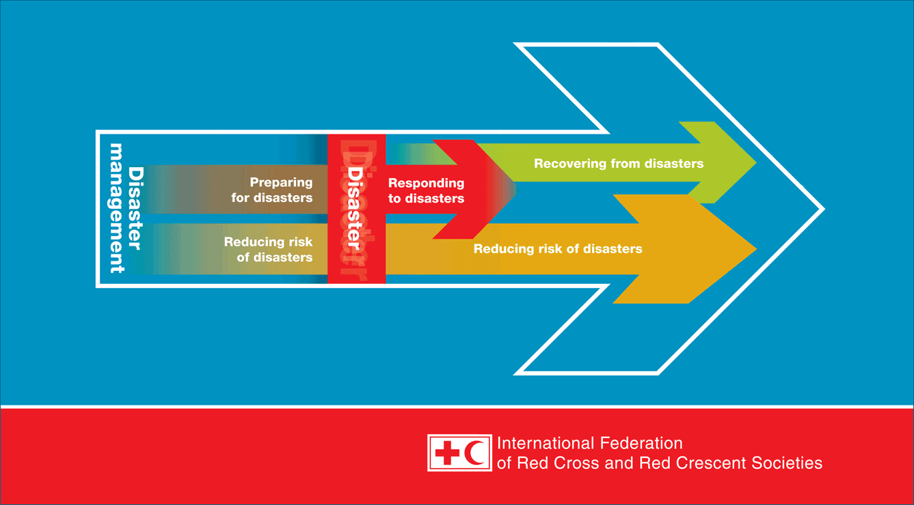

Welcome to our Disaster Management Website
What is Disaster Management ?
Disaster, as defined by the United Nations, is a serious disruption of the functioning of a community or society, which involve widespread human, material, economic or environmental impacts that exceed the ability of the affected community or society to cope using its own resources. Disaster management is how we deal with the human, material, economic or environmental impacts of said disaster, it is the process of how we “prepare for, respond to and learn from the effects of major failures”. Though often caused by nature, disasters can have human origins. According to the International Federation of Red Cross & Red Crescent Societies a disaster occurs when a hazard impacts on vulnerable people. The combination of hazards, vulnerability and inability to reduce the potential negative consequences of risk results in disaster.
Types of Disasters
Natural Disasters
According to the International Federation of Red Cross & Red Crescent Societies Natural Disasters are naturally occurring physical phenomena caused either by rapid or slow onset events that have immediate impacts on human health and secondary impacts causing further death and suffering. These disasters can be :
1 : Geophysical (e.g. Earthquakes, Landslides,
Tsunamis and Volcanic Activity)
2 : Hydrological (e.g. Avalanches and Floods)
3 : Climatological (e.g. Extreme Temperatures,
Drought and Wildfires)
4 : Meteorological (e.g. Cyclones and
Storms/Wave Surges)
5 : Biological (e.g. Disease Epidemics and
Insect/Animal Plagues)
The United Nations Office for Disaster Risk Reduction characterises Natural Disasters in relation to their magnitude or intensity, speed of onset, duration and area of extent e.g. earthquakes are of short duration and usually affect a relatively small region whereas droughts are slow to develop and fade away and often affect large regions.
Man-Made Disasters
Man-Made Disasters as viewed by the International Federation of Red Cross & Red Crescent Societies are events that are caused by humans which occur in or close to human settlements often caused as a results of Environmental or Technological Emergencies. This can include :
1 : Environmental Degradation
2 : Pollution
3 : Accidents (e.g. Industrial, Technological and
Transport usually involving the production, use
or transport of hazardous materials)

Complex Emergencies
Some disasters can result from multiple hazards, or, more often, to a complex combination of both natural and man-made causes which involve a break-down of authority, looting and attacks on strategic installations, including conflict situations and war. These can include :
1 : Food Insecurity
2 : Epidemics
3 : Armed Conflicts
4 : Displaced Populations
Aspects of Disaster Management
The International Federation of Red Cross & Red Crescent Societies defines disaster management as the organisation and management of resources and responsibilities for dealing with all the humanitarian aspects of emergencies, in particular preparedness, response and recovery in order to lessen the impact of disasters
Disaster Prevention
UNISDR views Disaster Prevention as the concept of engaging in activities which intend to prevent or avoid potential adverse impacts through action taken in advance, activities designed to provide protection from the occurrence of disasters [1]. WCPT similarly highlight that while not all disasters can be prevented, good risk management, evacuation plans, environmental planning and design standards can reduce risk of loss of life and injury mitigation. The HYOGO Framework was one such Global Plan for natural Disaster Risk Reduction, which was adopted in 2005 as a 10 year Global Plan, signed by agreement with 168 Governments which offered guiding principles, priorities for action and practical means for achieving disaster resilience for vulnerable communities.
Disaster Preparedness
According to ICRC, Disaster Preparedness refers to measures taken to prepare for and reduce the effects of disasters, be they natural or man-made. This is achieved through research and planning in order to try to predict areas or regions that may be at risk of disaster and where possible prevent these from occurring and/or reduce the impact those disasters on the vulnerable populations that may be affected so they can effectively cope. Disaster preparedness activities embedded with risk reduction measures can prevent disaster situations and also result in saving maximum lives and livelihoods during any disaster situation, enabling the affected population to get back to normalcy within a short time period.
Minimisation of loss of life and damage to property through facilitation of effective disaster response and rehabilitation services when required. Preparedness is the main way of reducing the impact of disasters. Community-based preparedness and management should be a high priority in physical therapy practice management

Disaster Response / Relief
Focused predominantly on immediate and short-term needs, the division between this response/relief stage and the subsequent recovery stage is not clear-cut. Some response actions, such as the supply of temporary housing and water supplies, may extend well into the recovery stage. Rescue from immediate danger and stabilization of the physical and emotional condition of survivors is the primary aims of disaster response/relief, which go hand in hand with the recovery of the dead and the restoration of essential services such as water and power.
Coordinated multi-agency response is vital to this stage of Disaster Management in order to reduce the impact of a disaster and its long-term results with relief activities including
1 : Rescue
2 : Relocation
3 : Provision Food and Water
4 : Provision Emergency Health Care
5 : Prevention of Disease and Disability
6 : Repairing Vital Services e.g. Telecommunications, Transport
7 : Provision Temporary Shelter
Disaster Recovery
Vulnerability of communities often continues for long after the initial crisis is over. Disaster Recovery refers to those programmes which go beyond the provision of immediate relief to assist those who have suffered the full impact of a disaster and include the following activities.
1 : Rebuilding Infrastructure e.g. Homes, Schools, Hospitals, Roads
2 : Health Care and Rehabilitation
3 : Development Activities e.g. building human resources for health
4 : Development Policies and Practices to avoid or mitigate similar situations in future
Resources
Explore our collection of resources to enhance your disaster preparedness and response efforts.